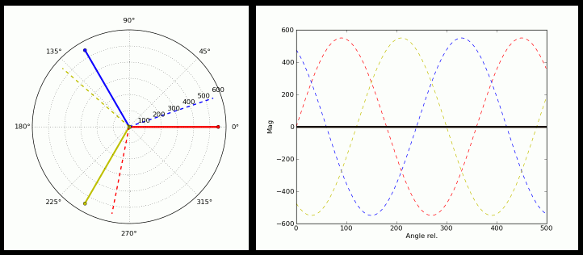

Dieser Algorithmus wird während des Prozesses der Verbindung des Generatorstators mit dem Gitter verwendet.
Wenn der Netzanschlussvorgang beginnt (Schnitt), wird der Generatorstator vom Gitter getrennt. Im Generatorluftspalt gibt es daher keinen magnetischen Fluss (sieheEinführung in Induktionsmaschinen)und dadurch erzeugt der Generator keine elektrische Leistung, obwohl seine Welle rotiert.
Der einzige Weg, ein Magnetfeld im Luftspalt zu erzeugen, so dassdie mechanische Leistung, die die Welle bewegt, wird in elektrische Leistung umgewandelt, durch Verbindung des Stators mit dem Gitter.
Wie dargestelltEinführung in Induktionsmaschinen, für diese Maschine als Generator, dieGeschwindigkeit seiner Wellemüssenüber der Synchrondrehzahl.
Der Algorithmus, der während derStart-upSequenz ist:
•Er hält den Stator während des Aufbringens des mechanischen Drehmoments vom Wind auf die Schaufeln vom Gitter getrennt und verstellt ihn jederzeit durch Änderung des Blattwinkelwertes.
•Esüberwacht kontinuierlich den Wert der Generatorwellenumdrehungen.
•Wenn diese Umdrehungen nahe, aber unter Gleichlauf (1480 bis 1490 U/min bei Gleichlauf bei 1500 U/min) liegen, verbindet sie dann den Stator mit dem Gitter, aber nicht direkt, sonderndurch die Thyristoren. Diese Verbindung, die einige Sekunden dauert (3 bis 4), zielt letztlich darauf ab:
Wechselstrom (vom Gitter) zunächst durch den Stator, um einen mit dem Gitter synchronen magnetischen Fluss zu erzeugen, zunächst aber klein. Dies wird durch Veränderung derelektrische Leitungswinkel der Thyristoren.
Dieser Strom steigt progressiv im Wert an, so dass es eine Motorisierungsphase (die Energie vom Netz zum Antrieb der Generatorwelle) gibt, bis er die Synchronisierungsphase erreicht, an welcher Stelle der Leitungswinkel der Thyristoren maximal (180o elektrisch) liegt, an welcher Stelle wir haben:
▪ Wellengeschwindigkeit gleich der Synchrondrehzahl.
▪Ein Strom durch den Stator wird synchron mit dem Gitter (identische Phasenwinkel) sein.

Links: Diagramm der Phasoren eines dreiphasigen Gitters. Jede der Farben mit einer festen Linie entspricht dem Phasor einer der Phasen. Die Kreise geben die Spannung jeder Phase bezüglich des Neutralen an. Die gestrichelten Linien entsprechen der mittleren Spannung, die jeden Anschluß des Generatorstators erreicht. Richtig.
Platte: gestrichelte Linien: Spannung in jeder der Phasen des Netzes. Feste Leitungen: Spannung an den Generatoranschlüssen.
Die in diesem Simulator emulierte Windenergieanlage weist einen Induktionsgenerator mit einem Eichkäfigrotor (kurzgeschlossener Rotor) auf und der Stator ist direkt mit dem elektrischen Netz verbunden.
Wie diskutiertWie eine Windenergieanlage mit einem Eichhörnchen-Käfiggenerator direkt mit dem Netz verbunden funktioniert,Diese Art des Generators bestimmt die Funktionsweise und den Betrieb der Windenergieanlage.
Die grundlegenden Operationen im Zusammenhang mit dem elektrischen Generator sind'start-up ' (Schnitt) und'shutdown' ' (Schnitt).
Beim Anfahren beginnt der Kraftzug aus der Ruhe und seine Drehzahl steigt aufgrund der Wirkung des Windes und des Steigungswinkelwertes, bis er die„synchrone Geschwindigkeit'. Das heißt, bis die Generatorwellendrehzahl nahe der Synchrondrehzahl des Generators liegt. Durch diesen Übergang wird der Stator vom Gitter getrennt. Damit der asynchrone Generator tatsächlich elektrische Energie erzeugt, die in das Netz eingespeist wird, ist Folgendes erforderlich:
•There must be interaction between two magnetic fluxes: one generated by the stator winding (and therefore synchronous with the grid frequency - 50 Hz or 60 Hz depending on the country), and another generated by the current induced in the rotor, which is short-circuited. The rotor current has a frequency that is proportional to the slip (the difference between the actual speed of rotation of the generator's mechanical shaft and the synchronous speed, in relation to the synchronous speed); when operating as a generator, this slip value is usually very low, around 1% or less, depending on the quality of the generator. With a slip of 1%, the frequency of the rotor current will be (1500 * 0.01 = 15 Hz).
•Die mit der Generatorwelle (dem Antriebsstrang) verbundene mechanische Leistungsquelle muss ausreichen, um diese Welle mit einer Geschwindigkeit geringfügig größer als die Synchrondrehzahl zu drehen, und der Stator muss auch mit dem Netz verbunden sein.
Dieses Problem ist für viele Stromerzeugungsanlagen üblich (z.B. in Generatoraggregaten) undSoftstarterist ein gemeinsames Verfahren. Die Arbeitsweise ist wie folgt:
1. In der Anfangsphase wird, wenn die Drehzahl der Generatorwelle weit von der Synchrondrehzahl entfernt ist, der Steigungswinkel der Schaufeln so gesteuert, dass der Antriebsstrang mit gesteuerter Beschleunigung auf die entsprechende Synchrondrehzahl des Generators beschleunigt.
2. Wenn diese Drehzahl nahe der Synchrondrehzahl, aber darunter liegt, wird dem Stator Spannung über Blöcke von zwei antiparallel geschalteten Thyristoren (Anode des einen, mit Kathode des anderen) zugeführt. Thyristoren sind elektronische Geräte mit drei Anschlüssen: die Anode, die Kathode und das Gate. Sie ermöglichen es, zwischen der Anode und der Kathode einen Strom unidirektional zu fließen, aber den Winkel des Wechselzyklus nur während eines bestimmten Teils des Zyklus durchzusteuern. Zwei sind antiparallel verbunden, um eine Richtungsführung zu ermöglichen. Dies ist in der animierten Figur dargestellt. Der Leitungswinkel wird durch den Moment bestimmt, in dem das Gate gegenüber der Kathode angeregt wird.
Ziel ist es, dem Stator Spannung zuzuführen, so dass er den magnetischen Fluss erzeugen kann, aber gesteuert, beginnend mit einem kleinen Wert, bis er den gesamten Zyklus leitet. Auf diese Weise steigt der "mittlere" Wert dieser Spannung von 0 und wird schließlich kontinuierlich an das Netz angeschlossen.
3. Zunächst führen die Thyristoren nicht durch. Sehen Sie die animierte Figur. In dieser Figur zeigt das Panel rechts die Spannungen in den drei Phasen eines Drehstromnetzes. Auf der linken Platte entsprechen die drei durchgehenden Linien (rot, grün und blau) Vektoren für jede der drei Phasen, "phasors": ein Vektor für jede Phase, wo die Phasenverschiebung zwischen ihnen (120o) zu sehen ist, und wo die "Zeit"-Variable ein Vektor ist, der den Bildschirm "löst".
Das Panel rechts zeigt mit gestrichelten Linien die Spannungen in jeder der Phasen im Netzwerk.
Die Phasor Repräsentation Deutlich zeigt das Moment, in dem die Thyristoren zu leiten beginnen, was dann auftritt, wenn die Frequenz der Generatorspannung kleiner ist als die Synchronfrequenz (die mit der des Rasters zusammenfällt). Die Wirkung der Thyristorleitung ist, dieVeränderungsrateder Generatorfrequenz bis sie gleich dem Netz wird.
4. Bei Annäherung der Generatorwellendrehzahl an die Synchrondrehzahl beginnt der Regler, den Thyristor-Leitwinkel schrittweise zu öffnen, so dass der Stator mit Strom beginnt, der das Magnetfeld im Luftspalt erzeugt.
Dies wird durch die drei Phäsoren mit gestrichelten Linien dargestellt: Da die Welle noch nicht mit synchroner Geschwindigkeit ist, "rotieren" diese Phäsoren mit einer Geschwindigkeit entsprechend der Drehzahldifferenz. Ihre Länge entspricht der durch den Leitungswinkel der Thyristoren auftretenden mittleren Spannung im Zyklus.
Schließlich sind beide Geschwindigkeiten gleich, an welcher Stelle der Generator über die Thyristoren mit dem Gitter verbunden ist, und die gestrichelten Linien sind auf den festen Leitungen und mit synchroner Geschwindigkeit.
5. Wenn genügend Zeit vergangen ist (ein paar Sekunden), überschreitet die Geschwindigkeit der Welle, angetrieben durch den Antriebsstrang, die Synchrondrehzahl, wodurch der Stator Strom im Rotor induziert, die einen magnetischen Fluss erzeugt, der im Luftspalt schneller rotiert als der von dem vom Netz angetriebenen Stator erzeugte magnetische Fluss. Dadurch beginnt der Stator, Strom in das Netz zu liefern, und damit verlangsamt sich der Triebstrang, da die an das Netz gesendete elektrische Leistung als mechanische Belastung der Triebwerkswelle angesehen wird.
6. In diesem Moment sind die Thyristoren kurzgeschlossen. Dies geschieht, weil, wenn sie in voller Leitung (d.h., wenn sie während der 360o eines Netzzyklus leiten), der Spannungsabfall an den Anschlüssen (Anode/Kathode) signifikant ist (ca. 2 Volt). Würde die Verbindung des Stators mit dem Netz durch die Thyristoren aufrechterhalten, würden sie eine beträchtliche Leistung ableiten: Bei Strömen von etwa 800 Ampere bis 1.000 Ampere würde die in diesen abgeführte Leistung 2 kW betragen.
Um dies zu vermeiden, gibt es Schütze (bekannt alsBypasses), die diese Ströme ohne nennenswerte Verluste leiten können. Da diese Bypasses aktiviert werden, wenn die Thyristoren in voller Leitung sind, gibt es bei geschlossenem Kontakt keine Probleme mit Lichtbögen.